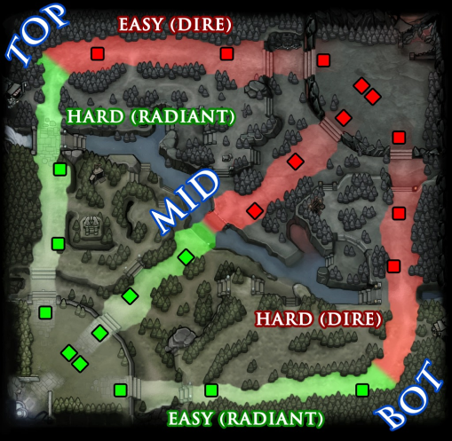
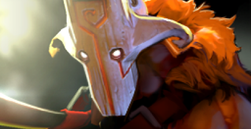

This site is designed for people who are starting to play Dota 2. Here you will find tips on the game and will be able to understand which character you should play.
positions

There are five roles, five heroes and five players in dota, which should be organically distributed and work well together. Let's highlight these key positions: Carey (aka first position), mider (second position), offlayer (third position), romancer or support hero (fourth position) and full support (full support or fifth position).
Carry (1 position)

At the beginn ing of the game, your task is: Earn as much gold as possible.As a rule, 1 position causes the most damage and brings great benefits already in the late period of the game.
Mid (2nd position)
This role is suitable, most of all, for more experienced players. Your task is to finish off as many creeps as possible and give as little farm as possible to the opponent on the middle line.
Offlane (3rd position)
Your task is to give as little farm as possible to the enemy carry. As a rule, this role is taken by "fat" characters with abilities that help to escape from persecution, or for long-term stunning of enemy characters
Semi-support (4th position)
This is a kind of support that even wards should buy and try to take out some items for themselves. He often walks along different lines and helps the offline
Full-Support (5th position)
Your task is to help your allies, especially your Kerry. You have a responsibility to put wards, buy dasts, smokies, and so on...